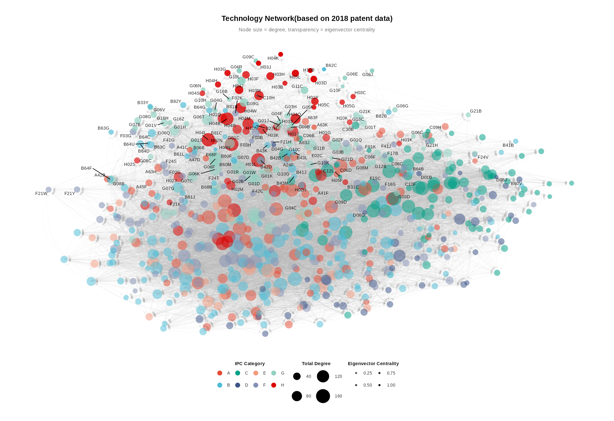

3 General Framework
4 Random forest
Algorithmic Framework
Random Forest constructs an ensemble of \(B\) decision trees through bootstrap aggregating (bagging) with random feature subsampling. For binary classification where \(y_i \in \{0,1\}\), each tree \(T_b\) is built on a bootstrap sample \(\mathcal{D}_b^*\) drawn with replacement from the original dataset.
Tree Construction via Recursive Partitioning
Each tree recursively partitions the feature space through binary splits. At node \(t\), we randomly select \(m\) features (typically \(m = \sqrt{p}\)) and evaluate all possible splits within this subset. For feature \(j\) and threshold \(\tau\), the split creates two child nodes: \(t_L = \{i : x_{ij} \leq \tau\}\) and \(t_R = \{i : x_{ij} > \tau\}\).
Gini Impurity as Split Criterion
Split quality is assessed via Gini impurity, defined as:
\[G(t) = 1 - \sum_{k=0}^{1} p_k^2(t) = 2p_0(t)p_1(t)\]
where \(p_k(t) = n_k(t)/n(t)\) represents the proportion of class \(k\) observations at node \(t\). Gini impurity quantifies node heterogeneity: \(G=0\) indicates perfect purity (homogeneous class), while \(G=0.5\) indicates maximum impurity (equal class distribution). The optimal split maximizes the weighted impurity reduction:
\[\Delta G(j, \tau) = G(t) - \left[\frac{n(t_L)}{n(t)} G(t_L) + \frac{n(t_R)}{n(t)} G(t_R)\right]\]
The weighting by relative node size prevents trivial splits that isolate single observations into pure but uninformative leaves.
Termination and Class Assignment
Recursive splitting continues until predefined stopping criteria are met: node purity (\(G=0\)), minimum node size threshold, or maximum tree depth. Terminal nodes are assigned the majority class of their constituent observations.
Ensemble Prediction
For prediction, observation \(\mathbf{x}\) traverses all \(B\) trees. The final classification aggregates individual tree predictions via majority voting:
\[\hat{y}(\mathbf{x}) = \text{mode}\{\hat{y}_1(\mathbf{x}), \ldots, \hat{y}_B(\mathbf{x})\}\]
Class probabilities are estimated as the proportion of trees predicting each class:
\[\hat{P}(y=1|\mathbf{x}) = B^{-1}\sum_{b=1}^{B} \mathbb{I}[\hat{y}_b(\mathbf{x})=1]\]
Interpreting Probability Estimates
This probability represents the empirical vote share across trees. Values near 1 indicate strong consensus for class 1 (high confidence), while values near 0.5 reflect uncertainty with divided predictions. Unlike parametric models, these are purely data-driven vote proportions rather than model-based probability estimates. Practitioners can adjust classification thresholds based on asymmetric misclassification costs.
Variance Reduction Mechanism
The algorithm’s effectiveness stems from variance reduction through decorrelated predictions. Bootstrap sampling and random feature selection reduce inter-tree correlation \(\rho\), yielding ensemble variance:
\[\text{Var}(\bar{y}) = \rho\sigma^2 + \frac{1-\rho}{B}\sigma^2\]
As \(B\) increases and \(\rho\) decreases, ensemble variance diminishes while maintaining the low bias of flexible tree models.
Feature Importance
Feature importance quantifies each predictor’s contribution by aggregating Gini impurity reductions:
\[I(j) = \frac{1}{B}\sum_{b=1}^{B} \sum_{t \in T_b : v(t)=j} \Delta G(t)\]
where the sum runs over all nodes using feature \(j\) for splitting. Higher values indicate features consistently creating purer partitions. However, importance measures predictive association rather than causal effect, and suffer from bias toward high-cardinality features and correlated predictor sets. They serve to rank predictive relevance but require caution in causal interpretation.
5 Technological potential And Feature Importance Technology Space
When two technologies (or products, activities, etc) share similar sets of input requirements (knowledge, resources, etc), we qualify them as related (Hausmann and Hidalgo 2011). This empirical observation has been confirmed in many areas in different streams of literature and formalised in the Principle of Relatedness(PoR) (Hidalgo et al. 2018). However, deriving concrete policy implications from this principle has proven far from straightforward (Hidalgo 2023; Li and Neffke 2024). The PoR is essentially a framework that formalises a qualitative intuition that’s been present in various streams of literature: The industrial fabric in a geographic location matters (Hidalgo 2021; Hidalgo and Hausmann 2009). This framework enables researchers to derive different metrics that quantify path dependency and, therefore, infer more granular and pragmatic policy recommendations (Li and Neffke 2024). However, we often find in the literature that many studies refrain from investigating beyond the identification of path dependencies(Hidalgo 2023). Although such identification may prove interesting at times, the entire idea of the PoR is to be used to break free from the path dependency curse and focus on unique regional paths that promote diversification (Imbs and Wacziarg 2003). Diversification is the endpoint because it creates different sets of non-fungible tacit and non-tacit knowledge/capacity (Collins 1974) that can be compounded over time and across industries to create value that drives regional growth and development (Dosi 1982; Weitzman 1998). Knowledge, in all its forms, is the driver of the PoR policy implications (P.-A. Balland and Boschma 2022; P.-A. Balland et al. 2019). And although identifying promising areas of knowledge(related or unrelated) is a useful exercise. Figuring out the unique elements that dictate the dynamics of knowledge flows is at the heart of the industrial policies in this context (Nomaler and Verspagen 2024). Moreover, the PoR is also complemented by the Economic Complexity paradigm(EC) pioneered for the first time in (Hidalgo and Hausmann 2009). EC is a methodological framework that builds on the PoR and frames economies as complex systems. The idea is simple: an economy, regardless of its scale, is a complex system that might be impossible to determine the entirety of its components. But if we quantify the interactions between different systems and their different components, then we can estimate indices and metrics that capture most of the variation. In this sense, the PoR quantifies path dependency patterns(via metrics like relatedness and proximity), and EC quantifies the sophistication of specialisation patterns(via metrics like complexity and fitness)1. One can also describe relatedness as a variation of a recommendation system and complexity as a dimensionality reduction exercise. However, there’s still no general consensus on the reliability of any given methodology for both exercises, regardless of the popularity of one or the other. What there’s a consensus on, however, is that these frameworks and the toolbox they provide can be improved further as stated in C. Pinheiro (2025). Regardless, EC and PoR were adopted in many policy papers such as Zaccaria et al. (2018), E and A (2021) and G, D, and L (2025).
In this context, the literature provides more threads of ideas that target a deeper understanding and analysis of complex economic systems. For instance, investigations and studies regarding unrelated diversification (Flávio L. Pinheiro et al. 2022; Boschma et al. 2023), geographic inequalities (Flavio L. Pinheiro et al. 2025; Hartmann et al. 2017), emerging industries/technologies (C. Lee et al. 2018; Fessina et al. 2024), and diversification strategies (Alshamsi, Pinheiro, and Hidalgo 2018), among others, are pioneering the effort to bridge different gaps in theory, policy implications, and methodology. These ideas, among others, suggest that investing in unrelated activities can yield greater value and help break free from the path‐dependency curse—a phenomenon the literature shows exacerbates regional inequalities. Thus, one of the challenges is to quantify how to expand related activities beyond path dependency(strategy), which activity/sector to aim for(target), and the requirements for such an investment to be fruitful(condition). The scope of our study is expanding ideas around diversification strategies and conditions.
Policy makers often face a difficult choice when deciding on industrial upgrading. The first is to take advantage of existing local capacity and knowledge(related diversification). This choice is presumably the easiest one, since the local economy already has what it takes for the implementation (Boschma 2017). The second is to invest in building new capacity/knowledge(unrelated diversification) with all the risks that such a gamble accommodates (Coniglio et al. 2021). These choices have been at the centre of different theories in development economics(big push, forward/backward linkages (Rosenstein-Rodan 1943; Hirschman 1958), etc). However, we argue on the side of (C. Pinheiro 2025) that the basis of this narrative is incomplete since it contains an implicit assumption that is often overlooked: it’s easier for an economic system to diversify into a related activity than an unrelated one. But how do we assess the ease of diversification, accounting for its level of relatedness?
K. Lee and Malerba (2017) show that for every stage of industrial maturity different level of diversity among other “initial-conditions” is needed. The main idea is that local capacities are necessary but insufficient condition for related diversification. This has been formalised explicitly in (Hausmann and Hidalgo 2011). where the authors define the “quiescence trap”, which can be observed when a country with few capabilities face low incentive to accumulate new ones. Additionally, in a broader policy context, and even if we assume that these initial conditions are met locally, and related diversification is feasible, it may simply exacerbate the regional disadvantages. Indeed related diversification has been observed to increase the gaps between locations (Mealy and Coyle 2022; Flavio L. Pinheiro et al. 2025). Essentially, if we have two locations, one already has a range of complex capacities, the other doesn’t. If policy only backs what each location already does well, the complex location keeps getting ever more complex, drawing more investment and talent, while the other one falls further behind exacerbating inequality. Moreover, there’s no consensus on one way to quantify relatedness. The literature usually relies on the co-occurrence matrix to construct the relatedness between products/technologies etc. (Coniglio et al. 2021) point out that most studies in this context do not differentiate between random co-occurrences, and co-occurrences that are due to related capacities and proposes a test to investigate these significance of these relationships. Similarly, the proposed methodology in (Albora et al. 2023) responds to the same criticism and argue that the number of products/technologies almost always outnumber that of regions/locations, therefore the information extracted from the co-occurrence matrix is at best a random walk.
5.1 Technological Potential
We follow the methodology proposed by (Albora et al. 2023) for trade data. The methodology named product progression, is based on a machine learning approach that enables researchers to unravel novel aspects of their RCA data. In our case that would be the non-linear dependence between technologies. Our Objective from this phase is to eventually predict whether a region will develop an expertise in a given technology. For reasons of data availability in other data bases that we will use in the next stages, we opted to limit these predictions to an 11 years interval spanning from 2008 to 2018 using data from 4 years ago for each prediction. These predicted probabilities are precisely the regional technological potential. They denote a hypothetical situation that describe for each region, the technologies it has potential to develop expertise in given the relationships that we already modeled.
We use Data from the European Patent Office, which contains details on patent applications from 1978 to 2021. The EPO provides a rigorous and detailed classification of each patent application up to 8 or more digits. In our case, we consider the IPC classifications, but since these classifications are extremely granular and are considerably larger than the regions observed (at 8000+ classes), we limit our data to the 4th digit of the IPC classification. These 4 digits contain 3 layers of information with which we can define a given technology, a section denoted by a letter, a class denoted by two digits, and a subclass denoted by another letter. Thus, an IPC class/technology such as F16H is structured hierarchically: Section F covers Mechanical engineering (including lighting, heating, weapons, and blasting), Class 16 pertains to engineering elements and general methods for producing and transmitting mechanical power, and Subclass H specifically addresses gears, shaft connections, and gearing for conveying rotary motion. With such a subset, we ended up with 641 distinct technologies. Additionally, the same data also provides details on where the applications were made, we capture these details at the NUTS2 level2 for 34 European countries within and outside the European Union, spanning across 345 regions. Additionally we also use data from the Eurostat database to incorporate regional level socio-economic factors which are detailed further in section ?sec-factors and summarised in ?tbl-sum.
Furthermore, we quantify regions’ specialisation by means of the Revealed Comparative Advantage(RCA) (Balassa 1965). In our context, the RCA measures the region’s relative specialization level in a given technology, which enables us to capture both expertise and diversity when we aggregate all the technologies for each region. This measure, also known as the Balassa index, proved useful in determining complex and non-linear relationships between products/activities. Although the RCA is mainly designed for use with international trade data, it has also been adopted in the literature on the geography of innovation. Simply put, the RCA quantifies simultaneously the relative level and the quality of co-occurrence, which reduces the noise in the data. Although some papers criticise the use of the RCA with patent classes (P. Balland and Boschma 2019; Diodato et al. 2023), we think it fits our objective in capturing meaningful relationships between technologies. We compute these RCA measures to obtain, for each year, a matrix denoting the regions in its rows and the technologies in its columns. We formalize it as follows: Let \(X_{r,t,y}\) be the measure of activity (patent counts) of region \(r\) in technology \(t\) during year \(y\). Where \(\mathcal{T}\) is the set of technologies, \(\mathcal{Y}\) is the set of years, \(\mathcal{R}\) is the set of regions, and \(\mathcal{C}\) is the set of countries, such that:
\[ \mathcal{T} = \{\,t : 1 \le t \le N_T\},\quad \mathcal{Y} = \{\,y : 1 \le y \le N_Y\},\quad \mathcal{R} = \{\,r : 1 \le r \le N_R\},\quad \mathcal{C} = \{\,c : 1 \le c \le N_C\}. \]
And \(N_T, N_Y, N_R, N_C\) are the total counts of technologies, years, regions and countries.
The RCA of region \(r\) in technology \(t\) in year \(y\) is
\[ \mathrm{RCA}_{r,t,y} = \frac{\displaystyle\frac{X_{r,t,y}}{\sum_{t'} X_{r,t',y}}} {\displaystyle\frac{\sum_{r'} X_{r',t,y}}{\sum_{r',t'} X_{r',t',y}}} = \frac{X_{r,t,y}\,\sum_{r',t'}X_{r',t',y}} {\bigl(\sum_{t'}X_{r,t',y}\bigr)\,\bigl(\sum_{r'}X_{r',t,y}\bigr)} \]
For each year \(y\), we then assemble the RCA matrix \(\mathbf{R}^{(y)}\) whose \((r,t)\)-entry is \(\mathrm{RCA}_{r,t,y}\):
\[ \mathbf{R}^{(y)} = \bigl[\mathrm{RCA}_{r,t,y}\bigr]_{r=1,\dots,N_{R}}^{t=1,\dots,N_{T}} \]
These yearly measures are essential for us, since our entire approach depends on different manipulations around these stacked matrices.
The modeling of the Random Forest algorithm is not intuitive in this proposed methodology. In fact the novelty of the approach proposed by (Albora et al. 2023) is not the use of a tree-based algorithm, but rather to model each technology separately. The idea is to construct a model for every technology in \(\mathbf{R}^{(y)}\) matrix such that the target technology \(i, i\in \mathcal{T}\) is the outcome and the features are all other technologies different than \(i\). The trick here is to binarise the outcome and leave the features as they are for every model we train such that:
\[ z_{r,t,y} \;=\; \begin{cases} 1 & \text{if }\mathrm{RCA}_{r,t,y}\ge1 \\ 0 & \text{otherwise} \end{cases} \]
The \(z_{r,t,y}\) term reflect the capacity of region \(r\) at year \(y\) for technology \(t\). In here capacity means that a region has an advantage/specialised in that specific technology relative to the other regions. Additionally we include a 4 year lag, or a fixed horizon we call delta, \(\delta=4\) in the features since the entire idea is to assess the capacity of the current outcomes based on the past features. This aligns with instincts in the literature in which studies like (Andreoni and Chang 2019) posit that past capacities predict future diversification. Eventually the predicted outcomes describe what technology is possible to develop expertise in, given the observed capacity \(\delta\) years ago. However, as stated in Albora et al. (2023) choosing the value of \(\delta\) is challenging since increasing it decrease the performance of the models. Our choice here, relies on this observation and is the most optimal decision since we train the models for different years instead of just one, thus we need to have for each model at each year of prediction enough observations.
The training and testing sets are constructed consequently:
We use a fixed horizon (\(\delta=4\)) years to predict future expertise. Let years run from \(y = y_0...y_f\), where \(y_0 = 1978\) and \(y_f = 2018\), let’s also consider the target year of prediction \(y_t \in \{2008,..., 2018\}\). We then have:
\[ X_{\text{train}} = \{ \mathrm{RCA}_{r,t,y} | y \in [y_0, y_t - 2\delta]\},\quad Y_{\text{train}} = {z}_{r,t',y} | y \in [y_0 + \delta, y_t - \delta] \} \]
\[ X_{\text{test}} = \{ \mathrm{RCA}_{r,t,y} |y_t - \delta\},\quad Y_{\text{test}} = \{ z_{r,t,y} |y_t\} \] Given the complexity of computations, which would require infeasible timing, we conducted cross validation on a random sample of models targeting G06G (Analog computers for data processing), B67B (Closing bottles, jars, or similar containers), D02J (Mechanical finishing or refining of yarns), and C08J (Working-up plastics-processing, recovery, or treatment of waste). Then we chose the parameter values with the most frequency and used them for the rest of the models specifically: mtry = 139, trees = 100, min_n = 38. For our case and computational constraints, this was the only feasible approach. The training was conducted in R using the Ranger package (Wright and Ziegler 2017), with targets (Landau 2021) as a pipeline orchestrator and the tidymodels framework.
Once we train our models one for each technology for each of the 11 years (7051 models in total) we obtain at each year, and for each technology, the probability that a region develops expertise. We define this set of probabilities as \(P(\mathrm{RCA}_{r,t,y} \geq 1)\) which we write simply as \(p_{r,t,y}\) and we will refer to these probabilities as the regional technological potential. When we aggregate these probabilities regionally, we obtain the (average) regional potential \(p_{r,y} = \frac{\sum_{t} p_{r,y,t}}{n_t}\), with \(n_t\) the corresponding number of observations.
5.2 Feature Importance Technology Space
A natural approach to constructing technology networks would be to use patent citation data: if Patent A cites Patent B, and they contain different technologies, this reveals a relationship between those technology domains. However, this approach presents three critical limitations for our purposes. First, EPO citations include examiner-added citations that may not reflect actual knowledge flows between inventors. Second, aggregating patent-level citations to technology-level relationships relies on co-occurrence patterns that obscure the directionality of knowledge dependencies—whether technology A enables B or vice versa. Third, citation networks are inherently backward-looking, reflecting past relationships rather than predicting future technological trajectories.
To address these limitations, we adopt the Feature Importance Product Space (FIPS) methodology (Fessina et al. 2024). Rather than inferring relationships from citation co-occurrence, FIPS uses machine learning to identify which existing technology specializations predict future specialization in other technologies. Specifically, we train random forest models where the current presence of regional expertise in technology T is predicted by past expertise patterns across all other technologies. The resulting feature importance scores reveal directional, predictive relationships: if expertise in technology A strongly predicts future expertise in B, this indicates A is a “stepping stone” toward B, even if the reverse is not true. This asymmetric structure captures hierarchical technological dependencies that symmetric co-occurrence measures would miss, and its forward-looking nature aligns with our focus on how current network positions influence future patent value.

Following (Fessina et al. 2024), we quantify specialization patterns by means of the Revealed Comparative Advantage(RCA) (Balassa 1965). Although the RCA is mainly designed for use with international trade data, it has also been adopted in the literature of the geography of innovation following the Balland nomenclature (balland2017geography?) we will refer to this metric as the Revealed Technological Advantage(RTA) instead. The RTA measures a location’s relative specialization level in a given technology which enables us to capture both expertise and diversity when we aggregate all the technologies for each location. This measure, proved useful in determining complex and non-linear relationships between products/activities. Simply put, the RTA quantifies simultaneously the relative level and the quality of co-occurrence, which reduces the noise in the network data. Although some papers criticise the use of the RCA/RTA with patents classes [pinheiro2025], we think it fits our objective in capturing meaningful relationships between technologies when we use them in the framework of (Fessina et al. 2024). We compute these measures to obtain for each year a matrix denoting the regions in its rows and the technologies in its columns. We formalize it as follows: Let \(X_{r,t,y}\) be the measure of activity (patent counts) of region \(r\) in technology \(t\) during year \(y\). Where \(\mathcal{T}\) is the set of technologies, \(\mathcal{Y}\) is the set of years, and \(\mathcal{R}\) is the set of regions.
6 Diversification, coherence, and the role of space
Coherence measures the alignment between a technology’s directional embedding in the network (incoming vs. outgoing edge strengths to different categories) and the regional average embedding pattern for specialized technologies in that category.
We construct this metric using cosine similarity which ranges from -1 to 1. Values near 1 indicate (high coherence) indicate the technology’s network position matches the region’s technological profile; values near 0 (neutral coherence) suggest misalignment between the technology’s relational structure and regional specialization patterns; whereas values near -1 suggest a complete mismatch.
For each region-technology-category-year combination, defined as :
\(\mathcal{T}\) is the set of technologies, \(\mathcal{Y}\) is the set of years, \(\mathcal{R}\) is the set of regions, and \(\mathcal{C}\) is the set of categories, such that:
\[ \mathcal{T} = \{\,t : 1 \le t \le N_T\},\quad \mathcal{Y} = \{\,y : 1 \le y \le N_Y\},\quad \mathcal{R} = \{\,r : 1 \le r \le N_R\},\quad \mathcal{C} = \{\,c : 1 \le c \le N_C\}. \]
And \(N_T, N_Y, N_R, N_C\) are the total counts of technologies, years, regions and categories
we measure the following cosine similarity:
\[\text{Coherence}_{r,i,t} = \frac{\mathbf{v}_1 \cdot \mathbf{v}_2}{||\mathbf{v}_1|| \cdot ||\mathbf{v}_2||}\]
where:
\(\mathbf{v}_1 = [\text{embcat\_to}_{i}, \overline{\text{embcat\_to}}_{r,c}]\) captures incoming edge patterns
\(\mathbf{v}_2 = [\text{embcat\_from}_{i}, \overline{\text{embcat\_from}}_{r,c}]\) captures outgoing edge patterns
\(\text{embcat\_to}_{i} = \frac{\sum \text{weights\_to}_{i,c}}{\text{count(incoming edges)}_{i,c}}\) measures average incoming edge weight from category \(c\) to technology \(i\)
\(\text{embcat\_from}_{i} = \frac{\sum \text{weights\_from}_{i,c}}{\text{count(outgoing edges)}_{i,c}}\) measures average outgoing edge weight from technology \(i\) to category \(c\)
weights = Normalised Feature Importance values denoting connection strength between technology pairs.
\(\overline{\text{embcat\_to}}_{r,c}\) = regional average of incoming embeddesdness for technologies with RCA≥1 in category \(c\) within region \(r\)
\(\overline{\text{embcat\_from}}_{r,c}\) = regional average of outgoing embeddesdness for technologies with RCA≥1 in category \(c\) within region \(r\)